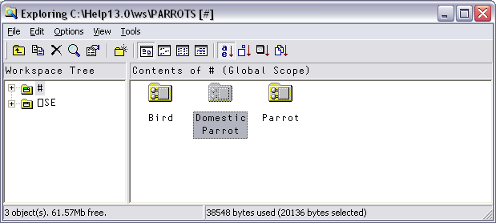
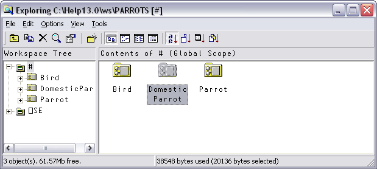
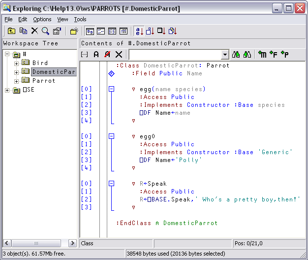
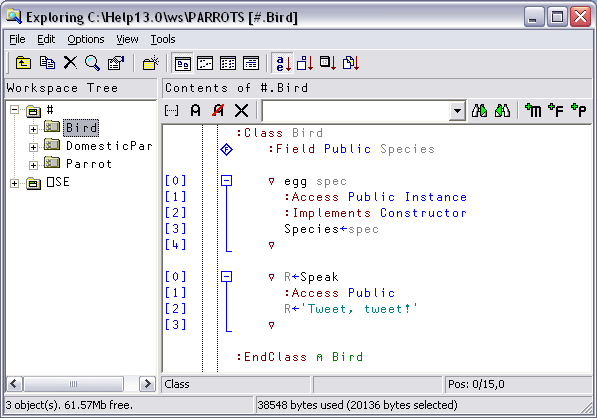
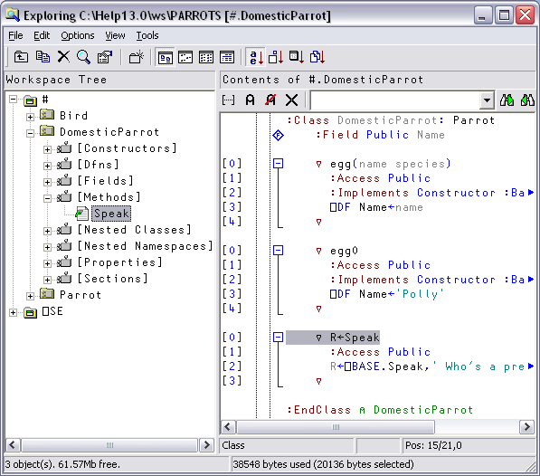

Classes are represented by icons. The picture below shows 3 classes: Bird, Parrot and DomesticParrot.
icons. The picture below shows 3 classes: Bird, Parrot and DomesticParrot.

If you open the # node in the left-hand pane, you see the contents of # as a tree.

Selecting DomesticParrot in the left-hand pane brings up its Class Script in the right-hand pane.

… and selecting Parrot in the left-hand pane brings up the Class Script for Parrot.

… and finally, selecting Bird in the left-hand pane brings up the Class Script for Bird.

If you open a Class node, a tree appears to help you to navigate within the Class script. In the picture below, the user has opened the [Methods] node and then clicked on Speak. The system has responded by scrolling to (if necessary) and highlighting the appropriate section of the script.
